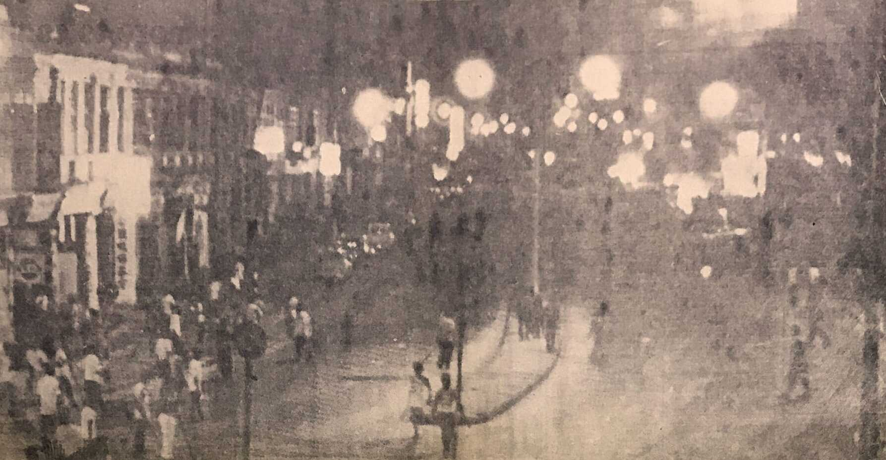

When people hear the word globalization, the first thing that usually comes to mind is trade, technology, or the Internet. While those are definitely part of it, this chapter made me realize globalization is much bigger than that. It also involves politics, culture, history, and the way people respond to major events that shape a country's future.
One of the biggest ideas I took away from this chapter is that globalization cannot be explained from just one perspective. It is easy to think globalization is all about businesses expanding overseas or countries trading with each other, but Pieterse argues that it is much more complicated. Politics, economics, culture, technology, and society all influence one another. Looking at only one part is like trying to understand a puzzle with half the pieces missing.
Looking Through Malaysia's History
The May 13 riots in 1969. Although this event happened long before social media and today's interconnected world, its impact can still be felt throughout Malaysia. It reflected the dirty combination of political tensions, economic inequalities, and ethnic divisions that had developed over many years. Instead of separating politics, culture, and economics, the riots show how closely connected these issues really are.
Following the riots, Malaysia introduced policies that aimed to reduce economic inequality while strengthening national unity. Those decisions did not just change the country's economy. They also influenced education, identity, politics, and the way different communities interacted with one another. Though the older generation still have some scars of the past, the younger generation seems to have chosen to forgive and move on. Personally, I've never really looked at race in the same way as those in the past. Streotypes do happen, but thanks to culture sharing and learning about how to accomodate and respect that in school, it became a non-issue.

More Than Just Economics
I think one mistake people often make is treating globalization as something that only happens between countries. It is deeply ingrained into local culture too! Malaysia's history shows that political decisions, cultural identities, and economic opportunities are all connected. When one changes, the others often change too.
"Globalization is both an historical fact and a political football." Jan Nederveen Pieterse, Globalization and Culture: Global Mélange, Chapter 2.
This quote makes so much sense to me because from a wider perspective, it is more than just history, but politics plays a huge role as a storyteller.
Why This Matters
This chapter helped me realize that globalization is not one single process. It is made up of many different pieces that all influence each other. Malaysia's history reminds us that culture, politics, economics, and identity cannot be separated. Even it gets dark and gritty, I feel that Globalization as a whole is still a beautiful aspect of the sharing of culture to one another.